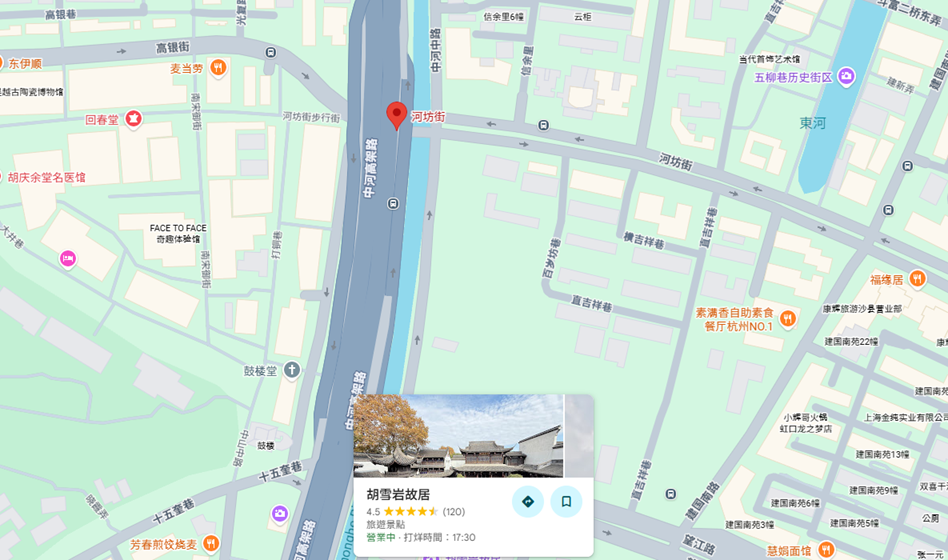
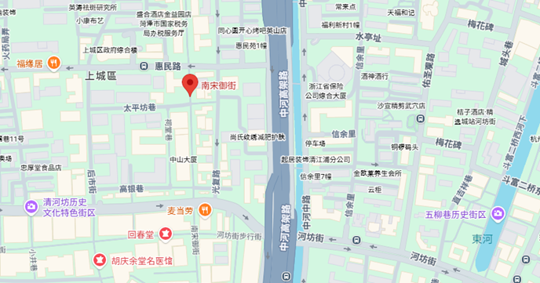
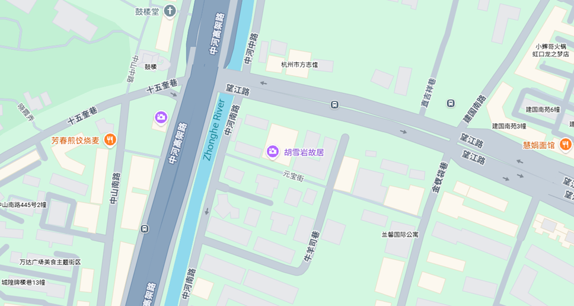
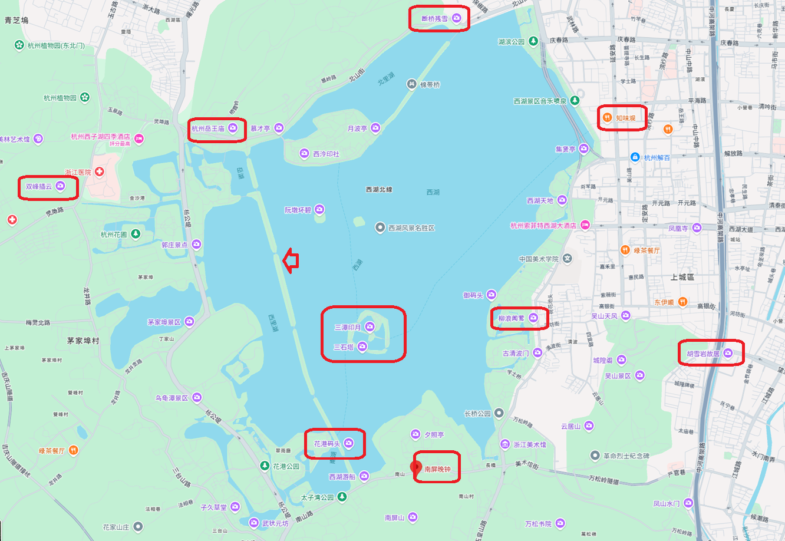

一、 核心景點攻略：古街與人文
1. 清河坊與南宋御街 (Qinghefang & Southern Song Imperial Street)
這兩條老街是杭州歷史的縮影，保留了明清與民國時期的建築風格。
- 河坊街： 充滿觀光與購物趣處，可以看到現場打鐵、售賣絲綢與古風飾品的攤販。
- 地理位置 ： 位於杭州市上城區（吳山腳下），距離西湖東岸約20分鐘車程。
- 交通方式 ： 可搭乘杭州地鐵1號線至「安定路站」或7號線至「吳山廣場站」，步行數分鐘即可抵達。
- 推薦玩法： 可結合與其十字相交的「南宋御街」一同遊覽，欣賞仿古與近代建築交織的夜景，感受古今交融的氛圍。
- 南宋御街： 曾是南宋皇帝出行的專用道路，現今呈現新舊文化交融，有許多文青咖啡店與歷史建築（如仿西洋式的拱窗白牆）。
- 地理位置 ： 南北走向，北起西湖大道，南接河坊街。
- 交通方式 ： 可搭乘杭州地鐵 1 號線至「定安路」站，出站後步行約 10-15 分鐘即可抵達街區。
- 推薦玩法： 杭州市的一條特色商業步行街，南北走向，屬於上城區中山中路。它北至西湖大道（東西走向），南接河坊街（東西走向）。
- 重要地標：
- 胡慶餘堂： 由「紅頂商人」胡雪岩創立的百年老字號中藥店，建築古色古香，至今仍有看診抓藥服務。
- 鼓樓： 仿明代風格重建的壯麗建築，是古代報時與預警的場所。


2. 胡雪岩故居 (Hu Xueyan’s Former Residence)
這座宅邸耗資巨大，展現了江南富商的豪氣。亮點： 擁有精緻的園林造景（亭台樓閣、小橋流水）與極其講究的建築細節，如當時罕見的彩色玻璃與精細的木石雕刻。此外，還能見到古代出行的「八人抬實木轎子」。
- 地理位置 ： 胡雪巖故居位於中國浙江省杭州市上城區元寶街18號。
- 交通方式 ： 搭乘杭州地鐵 5號線 或 7號線 至「江城路站」，由出口步行約 500 公尺即達。
- 推薦玩法： 建築與景點亮點。
- 芝園 ： 故居內的園林精華，以人工假山疊石、迴廊、亭台樓閣與池塘錯落著稱。
- 御風樓 ： 坐落於芝園假山之上，是當時杭州城內的最高建築之一，可俯瞰全園。
- 轎廳： 入口處停放著罕見的昂貴紅木官轎，是彰顯其顯赫官商身分的象徵。
- 奢華用料： 全宅大量採用高檔銀杏木、紫檀木、酸枝木等珍貴木材，並留有董其昌、鄭板橋等名家的書法石刻。

3. 靈隱寺與法喜寺 (Temples)
靈隱寺： 著名的千年古剎，隱身於群山之間，是避世與尋求淨土的好去處，又稱雲林禪寺）位於中國浙江省杭州市西湖區，始建於東晉咸和元年（公元326年），至今已有近1700年歷史。它是杭州最古老的佛教名剎，也是中國禪宗十大古剎之一與知名的祈福聖地。
- 地理位置 ： 南北走向，北起西湖大道，南接河坊街。
- 交通方式 ： 景區周邊不通地鐵，且週末與節假日容易嚴重塞車，強烈建議搭乘大眾運輸：
- 黃龍體育中心專線（最推薦） ： 搭乘地鐵 3 號線或 10 號線至「黃龍體育中心站」B 出口，出站即是公交總站，可直接轉乘「靈隱專線大巴」直達景區。
- 龍翔橋路線 ： 搭乘地鐵 1 號線至「龍翔橋站」A 出口，轉乘 7 路公交車直達靈隱站。
- 計程車/自駕避雷： 假日自駕會遇到嚴格的交通管制。若搭乘計程車，通常需要在西溪路或小牙塢等外圍換乘接駁專線才能進入景區。
- 推薦玩法： 建議預留 3 – 4 小時 進行深度遊覽。
- 飛來峰石刻群 ： 入園後先沿著溪邊步道參觀青林洞、玉乳洞等，欣賞多達 340 多尊五代至元代的摩崖石窟造像。
- 靈隱寺核心中軸線 ： 搭乘地鐵 1 號線至「龍翔橋站」A 出口，轉乘 7 路公交車直達靈隱站。
- 天王殿 ： 進門後可免費領取三炷清香（請勿外帶香火）。
- 大雄寶殿 ： 參拜高達 24.8 公尺的釋迦牟尼蓮花坐像。
- 藥師殿 ➡️ 華嚴殿 ➡️ 濟公殿（濟公和尚修行地）➡️ 羅漢堂（排成卍字型的 500 羅漢）。 。
- 順遊周邊： ：參拜完後可順著指標前往旁邊的永福寺（號稱錢塘第一福地）或爬上北高峰參拜天下第一財神廟。
二、 自然景觀：西湖與濕地
1. 西湖 (West Lake)
夏季推薦： 6月至7月是西湖荷花盛開的季節（「接天蓮葉無窮碧」）。
經典遊玩： 漫步於蘇堤看垂柳搖曳，或在斷橋感受浪漫傳說，傍晚則可欣賞「雷峰夕照」。
- 地理位置 ： 南北走向，北起西湖大道，南接河坊街。
- 交通方式 ： 從地鐵5號線的蔣村站上車，往「姑娘橋」方向搭乘。搭乘 6 站至建國北路站， 站內轉乘地鐵1號線（往湘湖方向）。搭乘 2 站至龍翔橋站下車。 從 C 或 D 出口出站，步行約 5 分鐘即可抵達西湖湖濱公園。
- 推薦玩法： 杭州市的一條特色商業步行街，南北走向，屬於上城區中山中路。它北至西湖大道（東西走向），南接河坊街（東西走向）。

2. 西溪國家濕地公園 (Xixi Wetland)
特色： 杭州的「城市綠肺」，夏季可觀賞滿池的睡蓮。遊客可以搭乘小船穿梭於綠意盎然的水道，享受自然寧靜。
3. 九溪煙樹 (Jiuxi Yanshu)
評價： 被稱為「小九寨溝」，溪流與紅楓交織。晴天時色彩繽紛，雨天則霧氣繚繞，極具詩情畫意。
三、 特色小鎮與現代景觀
古鎮體驗： 影片推薦了塘棲古鎮（800年歷史、橫跨大運河的古橋）以及烏鎮、西塘等典型江南水鄉。
現代地標： 錢江新城城市陽台，在此可觀賞代表現代杭州的「日月同輝」建築（國際會議中心與大劇院），夜晚還有震撼的燈光秀。
四、 必吃美食與伴手禮清單
1. 正餐推薦：狀元麵館 (Zhuangyuan Noodle House)
位於河坊街尾端，適合體驗杭州特色麵食。
- 片兒川： 杭州最具代表性的湯麵，湯底料經炒製而成。
- 香干肉絲拌川： 乾拌麵形式，料頭炒得很有「鑊氣」（焦香味），口味較重，建議搭配清爽的拍黃瓜一起食用。
2. 名牌糕點：知味觀 (Zhi Wei Guan)
- 杭州知名的百年糕餅店，西湖邊多分店，常需排隊。
- 龍井茶餅： 招牌推薦，口感潤澤如綠豆糕，帶有濃郁茶味。
- 桃花酥： 外型美觀，內餡包裹酸甜的山楂。
- 鮮花餅： 內餡有滿滿的玫瑰花香，口感微軟。
- 紫薯芝士餅： 濕潤度高，紫薯與芝士香氣結合。
- 建議： 購買現場現做的餅皮更酥脆，不建議買保存期限長的盒裝版。
3. 街頭小吃與特產
- 三楂條（山楂條）： 在河坊街隨處可見，口感酸甜，是當地常見的零嘴。
- 特色醬菜： 如辣醬、醃蘿蔔等，有些攤位提供現場試吃，但要注意部分醬料辣度極高。
- 龍井茶與絲綢： 杭州是著名產地，在南宋御街與河坊街有許多專業店鋪可供選擇。
💡 旅遊小貼士
- 最佳時間： 每年 6月到7月 是淡季，人潮較少，且能欣賞到夏季特有的荷花與綠意。
- 交通規劃： 老街區（清河坊、南宋御街、胡雪岩故居）相距不遠，適合安排在同一天步行遊覽。
- 穿著建議： 夏季多雨且濕熱，建議攜帶雨具並穿著輕便透氣的衣物，若要逛老街，建議選擇好走的鞋子。